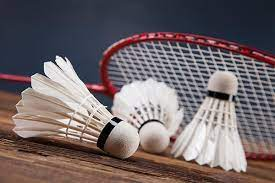

@brunosuyan
@davijalcantara
@maria_vvitoria
@emanuelyvalles
@joopedro_nunes
O badminton foi criado no século XIX na Inglaterra, inspirado num jogo que era praticado na Índia chamado de Poona. No entanto, um jogo semelhante já era praticado na Grécia Antiga: Tamborete e Peteca.
O nome desse esporte está relacionado com a Badminton House, local que supostamente foi jogado pela primeira vez. A Badminton House era propriedade do Duque de Beaufort's. Sua popularidade foi crescendo com o passar do tempo. Da Inglaterra ele foi levado para outros países da Europa, Ásia e América. Entretanto, no Brasil, o Badminton ainda não é um jogo muito popular, embora essa modalidade venha crescendo a cada ano.
Sua consolidação se deu com a fundação da "Federação Internacional de Badminton", em 1934. Atualmente o nome desse órgão é Federação Mundial de Badminton (BWF) e sua sede está localizada na cidade de Gloucestershire, na Inglaterra. Essa entidade é responsável por organizar eventos desse esporte, com destaque para o "Campeonato Mundial de Badminton".
Hoje, mais de 130 países são membros da Federação. Alguns países que dominam esse esporte são: China, Indonésia, Coréia e Malásia, todos no continente asiático. Somente no início da década de 90 que o badminton foi incluso nas modalidades olímpicas. Sua estréia aconteceu nas Olimpíadas de Barcelona em 1992.
No Brasil, a primeira partida oficial de Badminton foi realizada em São Paulo no início da década de 80. Em 1993 foi criada a "Confederação Brasileira de Badminton", responsável por organizar eventos desse esporte no Brasil. Sem dúvida, esse momento foi crucial para o aumento da prática do badminton no território nacional.
